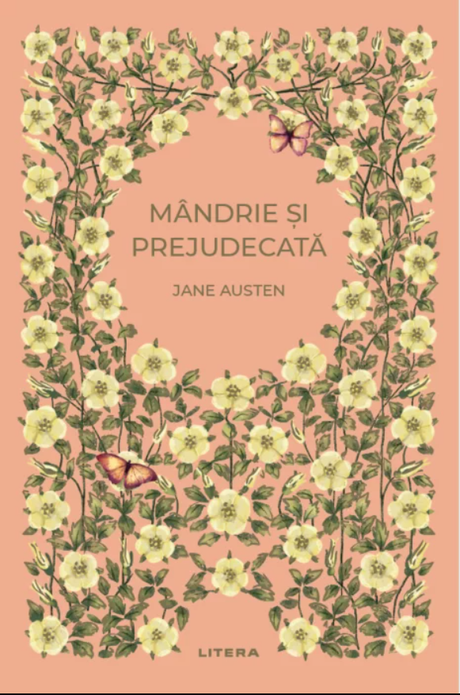
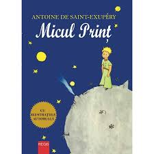

Vinovăție, ispășire și dileme morale în Petersburg. Crimă și pedeapsă 2 F.M. Dostoievski • Polirom 1866Psihologic
Primul an la Hogwarts: magie, prietenie, pericol. Harry Potter și Piatra Filozofală J.K. Rowling • Arthur 1997Fantasy
 Dragoste și maniere în societatea engleză. Mândrie și prejudecată Jane Austen • Litera 1813Clasic
 O meditație tandră despre prietenie și sens. Micul Prinț Antoine de Saint‑Exupéry • — 1943Ficțiune